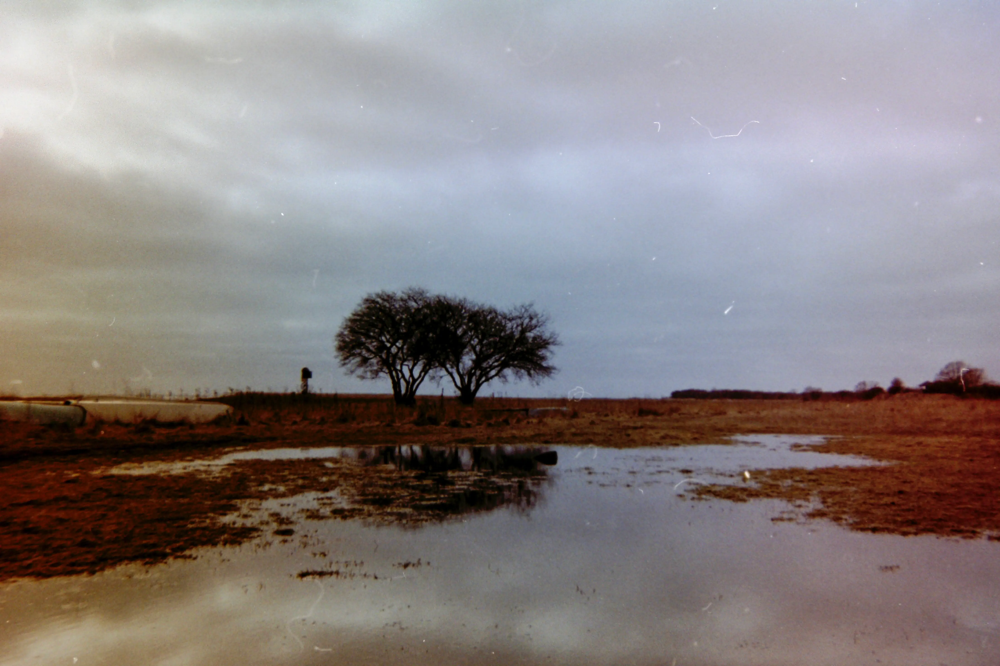
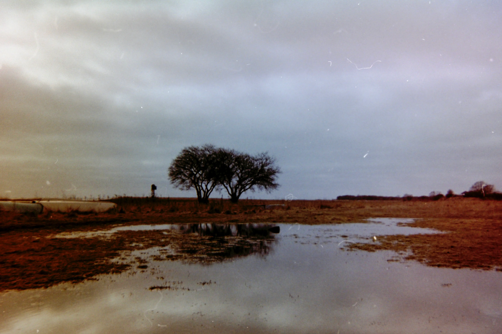

Kapitel 1 - Intro til street foto
Hvad er street foto? Det handler i bund og grund om at skyde byens
liv og byens geometri (urban geometry). I dette kapitel får du en
grundig intro til hvad street foto er og et overblik over nogen af
de kendte street-fotografer. Alt krydret med en masse gode
eksempler på street fotos.
Kapitel 2 - Om at skyde street
Vil du skyde street? Så er der ikke nogen vej udenom: Du skal ud
på gaderne og prøve det! I dette kapitel får du en teknisk
indføring i hvordan du bedst skyder street. Uanset om du er
begynder eller professionel, er der mange gode tekniske tips og
tricks til street-skyderiet.
Kapitel 3 - Om at finde det rette motiv
Indimellem er man heldig, andre gange kommer man hjem helt uden
gode motiver. Med et par tips og tricks til at finde de rette
motiver, stiger chancen gevaldigt for at fange de gode motiver.
Kapitel 4 - Digital street foto
De fleste af os skyder oftest digitalt fordi det er billigere og
nemmere. Og nogen teknikker og fremgangsmåder egner sig kun til
digital street foto. I dette kapitel får du en række tips og
tricks til digital street-foto.
Kapitel 5 - Analog street foto
Analog er sejt fordi det er mere “ægte,” dyrere og mere besværligt
end digital. Det signalerer entusiasme. Nogle teknikker og
fremgangsmåder egner sig bedst til analog street foto. I dette
kapitel får du en række tips og tricks til analog street-foto.
Kapitel 6 - Om at skyde sort/hvid
Alle street-fotografer skyder sort/hvid nu og da. Nogen altid.
Hvorfor? Hvad er der specielt ved sort/hvid fotografering, og hvad
adskiller sort/hvid fra farvefotografering? Her får du en række
tips og tricks til sort/hvid fotografering.
Kapitel 7 - Kreative teknikker
Dobbelteksponeringer, ICM (intentional camera moves), smadrede
objektiver, gamle filmruller og alle mulige andre, spændende
kreative teknikker kan løfte dine fotografier fra at være kedelige
dokumentationer af hverdagen til at blive vilde kunststykker. Så
dyk ned i dette kapitel om eksperimenterende teknikker!
Kapitel 8 - Kom helt tæt på!
Street foto handler om at fotografere livet på gaden - men tør du
at gå helt tæt på fremmede mennesker og knipse løs? Du kan lige så
godt øve dig, for det er det der vil gøre dig til en bedre
street-fotograf…


 
